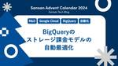

Sansan Tech Blog
https://buildersbox.corp-sansan.com/
Sansanのものづくりを支えるメンバーの技術やデザイン、プロダクトマネジメントの情報を発信
フィード

Vol.04 データベース書き込み性能劣化への対応
Sansan Tech Blog
Bill One 開発 Unit ブログリレー2024の第4弾になります！ こんにちは。技術本部 Bill One Engineering Unitの向井です。 Bill Oneは急速にサービスの規模を拡大しており、それにあわせてトラフィックやデータ量も急激に増加しています。 特にサービスのローンチから最も長い歴史をもつ請求書受領の機能はこの傾向が顕著であり、さまざまな問題が発生しています。 そのひとつがデータベースのパフォーマンスです。 サービスのローンチからしばらくの間は、主に参照系のクエリにおいてパフォーマンス問題が発生していました。 この問題に対してはスロークエリにひとつずつ対処するこ…
8分前

SIEM on AOSからSplunkへ：SIEM基盤移行について振り返り 1
1
Sansan Tech Blog
こんにちは！技術本部 情報セキュリティ部 CSIRTグループ所属の吉山です。 普段の業務では、AWSをはじめとする各種クラウド環境のセキュリティ向上・統制やSIEM基盤の開発・運用などに向き合っています。 今回は、昨年12月〜今年2月頃にかけて行った新SIEM基盤の導入・移行について、1年経ったので振り返りとして記事にまとめていきたいと思います。 本記事はSansan Advent Calendar 2024 - Adventar8日目の記事です。 移行開始までの道程 SIEM on AOSが抱えていた課題 なぜSplunkを選んだのか 移行中のお話 稼働開始後 ログ取り込み範囲の拡大、取り込…
1日前

Slackに投稿された通達をNotionDBでToDo化する
Sansan Tech Blog
本記事はSansan Advent Calendar 2024の7日目の記事です。 こんにちは。 技術本部研究開発部の高橋寛治です。 Slackに投稿された読了や対応を求められる通達の対応漏れを防ぐために、自動でNotion上にToDoを追加する仕組みを作りました。 その成り立ちや機能、実装の概要、効果について紹介します。
2日前

【イベントレポート】VPoEの視点で見る組織の進化 〜組織変革とグローバル連携、次世代リーダー育成の戦略〜 3
Sansan Tech Blog
2024年10月9日、Sansan株式会社はイベント「VPoEの視点で見る組織の進化 〜組織変革とグローバル連携、次世代リーダー育成の戦略〜」を主催しました。イベント会場となったのは、JR渋谷駅に隣接する渋谷サクラステージ。弊社は2024年9月30日に同所へとオフィス移転したのですが、オフィスでのイベント開催は移転後初でした。オフライン&オンラインのハイブリッド形式で開催いたしました。本イベントでは、キャディ株式会社とSansan株式会社、株式会社メルペイの3社のVPoEが登壇。それぞれ異なる事業モデルや事業フェーズ、開発組織の構造・規模の中で、マネジメントに向き合う3者が、組織変革やグローバ…
2日前

Vol.03 良いプロダクトは良いチームから生まれるはなし 1
Sansan Tech Blog
こんにちは、プロダクトデザイナーの長澤です。 この記事はBill One 開発 Unit ブログリレー2024第3弾です！ 今日はデザイナー視点での開発チームの話をします！
3日前

EightでStripeのトライアル機能を導入した話
Sansan Tech Blog
日が暮れるのが早くなり、各所でイルミネーションが始まり一年の終わりを感じる今日この頃、みなさんどうお過ごしでしょうか？ 今日はEightで展開している中小企業向け名刺管理サービス「Eight Team」にて無料トライアル機能を開発した話をしようと思います。なお、本記事は Sansan Advent Calendar 2024, JP_Stripes Advent Calendar 2024 6日目の記事です。
3日前

レガシーコードリーディング会を継続するために意識したこと 2
Sansan Tech Blog
はじめに 技術本部 Eight Engineering Unitの山本です。今回はAndroidチームで行っているレガシーコードリーディング会について話します。なお、本記事はSansan Advent Calendar 2024の5日目の記事です。 自分は既に8年近くEightに携わっており、そこそこ古株になります。そのために古くから残っていて最新の設計にできていない古いコードについても知っています。 しかし、新しく入ったメンバーには最近の設計しか説明しないので、古いコードの調査や改修に時間がかかる問題がありました。 新しい設計に書き直すリファクタリングをするのが望ましいとは思いますが、コスト…
4日前

Vol.02 組織として、定期的に品質向上と改善に向けた取り組みをどのように推進しているか 1
Sansan Tech Blog
Bill One 開発 Unit ブログリレー2024の第2弾になります！ なお、本記事はSansan Advent Calendar 2024の4日目の記事です。
5日前

BigQueryのストレージ課金モデルの自動最適化
Sansan Tech Blog
研究開発部の田仲です。 本記事は、Sansan Advent Calendar 2024の3日目の記事です。 背景 どちらの課金モデルが適しているかを判断する 自動的に安い方にする 処理概要 ポイント まとめ
6日前
Cloud ComposerとCloud Run Jobsを組み合わせたデータパイプラインの構築 2
Sansan Tech Blog
こんにちは。研究開発部 Architectグループの中村です。 本記事は、Sansan Advent Calendar 2024の2日目の記事です。 今回は、Cloud ComposerとCloud Run Jobsを組み合わせたデータパイプラインの実装について紹介します。
7日前

本番相当の環境でdbt runを安全に検証する
Sansan Tech Blog
はじめに 開発環境のご紹介 dbt run テスト dbt run によって生成されたデータは一定期間で削除する必要がある 開発の影響があるモデルだけテストしたい GitHub Actions を使いたい まとめ はじめに こんにちは。技術本部研究開発部 Architectグループの田辺です。本記事は Sansan Advent Calendar 2024 の 1日目です。弊チームでは新規dbtモデル開発時に dbt run を検証環境で検証してから本番環境へ反映させていました。検証環境にあるデータ量は少なく、ソースとなるプロダクトデータを模したものも検証用のものであるため、そこで期待通りに動…
8日前
業務中に出会ったOSSのバグ修正を行いコントリビュートした話
Sansan Tech Blog
こんにちは。9月にDigitization部データ化グループに入社した山内です。 PythonのORMライブラリであるSQLAlchemyのバグを業務中に見つけました。 今回はそのバグを修正してOSSにコントリビュートした過程を紹介します。
9日前
FalconTech 2024参加記録
Sansan Tech Blog
こんにちは！情報セキュリティ部CSIRTグループプロダクトセキュリティチーム所属の北澤と廣川です。 普段は営業DXサービス「Sansan」やインボイス管理サービス「Bill One」をはじめとしたSansanが提供するプロダクト全般のセキュリティ向上を目的とした業務に取り組んでいます。 今回は2024年11月6日にマクニカ社主催のCrowdStrikeユーザーカンファレンスである、FalconTech 2024に情報セキュリティ部のメンバー4名で参加してきました。実践的な知見が得られる同イベントの魅力について、参加レポートをお届けします！
10日前
Vol. 01【PostgreSQL】わたしのクエリ、遅すぎ...？Row Level Securityに潜むLEAKPROOFの罠
Sansan Tech Blog
技術本部 Bill One Engineering Unit 共通認証基盤チームの古石です。 Bill One 開発 Unit ブログリレー2024の記念すべき第一弾なのですが、少々ニッチな話になります。ごめんなさい。
10日前
DBバージョンアップ検証の不安と大変さにどこまで向き合うか考える
Sansan Tech Blog
こんにちは、Digitization部で名刺データ化システムの開発をしている荻野です。 先日弊チームは、名刺データ化システムのDBをAurora2（MySQL5.7互換）からAurora3（MySQL8.0互換）へバージョンアップしました。 DBのバージョンアップは影響が大きい一方で、懸念が完全になくなるまで検証コストを掛けるのが難しい業務だと思います。 この記事では弊チームがどういう向き合い方をしたかのメモを残しておきます。 類似の中〜大規模なDBバージョンアップにどう向き合うかの知見やノウハウの一例として参考にしていただければ幸いです。 Aurora2はすでにEOLを迎えて公式ドキュメント…
12日前
Eightの検索機能をCloudSearchからOpenSearchに移行して得たもの
Sansan Tech Blog
こんにちは！技術本部Eight Engineering Unitでサーバーサイドエンジニアをしている常盤です。 名刺アプリ「Eight」では最近、検索機能のうち2つをAmazon CloudSearchからAmazon OpenSearch Serviceに移行しました。今回は、移行した背景やそのメリットを紹介します。
13日前
Vol.00 Bill One 開発 Unit ブログリレー2024を開催&アーキテクチャConference 2024に協賛します！
Sansan Tech Blog
こんにちは！技術本部 Bill One Engineering Unitの樋口です。 最近キーボードにハマっていてよくキースイッチやキーキャップを漁っているのですが、11月だけで2台もキーボードが増えてしまいました。近年とても完成度の高いキーボードが多いので困ってしまいますね。 さて今回は、Bill Oneについて2点お知らせがありますので最後までお読みいただけると幸いです。
14日前
TypeScript開発にモジュラーモノリスを持ち込む
Sansan Tech Blog
Bill One Entry*1の秋山です。 本題へ入る前にお知らせです。12/23、TypeScript を活用した型安全なチーム開発をテーマにイベントを開催します。弊社社員のうち、TypeScript を日々の開発で活用しているメンバーが登壇します。ぜひお気軽にご参加ください。 sansan.connpass.com はじめに モジュラーモノリスとは 保守性が低いとビジネスに悪影響を与える 技術的負債と開発生産性 コード品質とビジネス影響 モジュール分割の方針 方針１：モジュールにDBテーブルを専有させる 補遺：モジュラーモノリスとNoSQL 方針２：モジュール内をレイヤードアーキテクチャ…
19日前
ArgoCD Image Updaterから内製ツールに移行した話
Sansan Tech Blog
こんにちは、研究開発部 Architectグループ ML Platformチームでインターンをしていた上田です。 今回はCI/CDパイプラインで利用されていたArgoCD Image Updaterを内製ツールに移行した経緯について紹介します。
25日前
SETチーム始動 Playwrightで実現した最初の成果
Sansan Tech Blog
技術本部 Quality Assurance グループの杉本です。元々はプロダクト開発を行っていましたが、QAグループに SET（Software Engineer in Test）チームが立ち上がるということで異動してきました。 チーム発足から、Playwrightを使ったEnd to Endテスト（以下、E2Eテスト）の導入と最初の成果についてご紹介します。
1ヶ月前
EightのエンジニアでKaigi on Rails 2024に参加してきました！
Sansan Tech Blog
こんにちは。 名刺アプリ「Eight」でエンジニアをしている鳥山（@pvcresin）です。 10月25, 26日に有明で行われたKaigi on Rails 2024に、Eightのエンジニアメンバーで参加してきました！ 今回は、それぞれの視点からKaigi on Railsの感想や印象に残ったセッションについてレポートします。
1ヶ月前
Web版Eightのリニューアルと、安全なリリースのための取り組み
Sansan Tech Blog
こんにちは。Eightでエンジニアをしている藤野です。最近、電動の燻製機を買ったのですが、思った以上に煙が出るので普段使いできそうになくタンスの肥やしになりそうなのが悩みです。 さて今回は、Web版Eightをリニューアルした話と、リリースにあたって障害懸念を減らすために行ったアプローチについて話します。
1ヶ月前
GKEのInteractive Troubleshooting PlaybookとGeminiを活用した爆速トラブルシューティング
Sansan Tech Blog
こんにちは。Strategic Products Engineering Unit SREグループの辻田です。 先日、Google Cloudさんが主催するTAP（Tech Acceleration Program）に参加してきました。2回目の参加*1となる今回は、Platformのより詳細な設計に関するディスカッションや、実践的な運用のノウハウについて学べました。 *1:1回目の記事はこちら。 Platform Engineering Jump Startに参加して学んだこと - Sansan Tech Blog
1ヶ月前
億単位の大規模ジョブ処理の高速化と順序保証に挑んだバッチシステムの開発
Sansan Tech Blog
はじめに 技術本部 Sansan Engineering Unit Nayoseグループの上島です。 今回、Nayoseグループで大規模なバッチシステムを開発し、従来システムと比較して9倍の高速化を達成しました。また、処理期間は数十日から数日へと大幅に短縮することに成功しました。 本記事では、この事例と設計時に考慮した点をご紹介します。具体的にはタイトルにある通り、億単位の大規模ジョブを扱う中で直面した課題—ジョブの抽出・管理・実行制御—への取り組みについて解説します。 Nayoseグループは、当社のほぼすべてのプロダクトが利用する共通基盤である”データの名寄せ”サービスを開発・運用しています…
1ヶ月前
ソート対象を分割することでクエリ実行を成功させる
Sansan Tech Blog
技術本部 Sansan Engineering Unit Nayoseグループでエンジニアをしている冨田と申します。私たちのグループでは、当社のほぼすべてのプロダクトが利用する共通基盤である”データの名寄せ”サービスの開発を日々行っています。 今回は、普段の業務の中で直面した課題についてご紹介します。Athenaクエリの実行中に、ソート処理がボトルネックとなり失敗してしまう問題が起きました。そこで、問題解決に向けて試行錯誤したプロセスや得られた知見を共有します。
1ヶ月前
ナラティブ文化の醸成 〜次なるステップに向けたQAグループの新たな取り組み〜
Sansan Tech Blog
こんにちは。Quality Assuranceグループで、Bill Oneの品質マネジャーをしている秋元真理子です。現在QAグループで取り組んでいる「ナラティブ文化」についてご紹介したいと思います。
1ヶ月前
Vol.09 No Changesへの道 : Terraform for Continuous Deliveryを目指して
Sansan Tech Blog
こんにちは。Strategic Products Engineering Unit SREグループの亀井です。こちらの記事が気になったあなたはTerraformについて何らかの解をお探しで辿り着いたのかもしれません。Terraformの管理は各社でさまざま・プロダクトでも違いがあります。本記事で記述されているのは、いち管理方法ですのでそう言った考え方、方法で記述することもあるのかという意識で読み進めていただければと思います。なお、本記事は【Strategic Products Engineering Unitブログリレー】という連載記事のひとつです。
1ヶ月前
お客様フィードバックをAzureとNotionで構造化：カスタマーサクセスに寄り添うQAの取り組み
Sansan Tech Blog
序章: カスタマーサクセスに寄り添うためのQAの役割 こんにちは。QA部門でEightとContract Oneの品質マネジャーを務めている三好秀治です。本稿では、Slack・Azure Logic Apps・Azure OpenAI Service・Notionを活用したお客様フィードバックの管理効率化と、カスタマーサクセスに寄り添う取り組みについてご紹介します。カスタマーサクセスの向上には、お客様のフィードバックが不可欠です。これはプロダクト改善や顧客満足度向上に直結するからです。私たちは、フィードバックの自動分類や可視化を通じて迅速な対応を実現します。本記事では、この仕組みの構築方法を具…
1ヶ月前
当たり前を作っていくオペレーション：Bill Oneスキャンセンターの挑戦
Sansan Tech Blog
はじめに Digitization部 Scan Operations Group の吉本です。 今回は、Bill Oneサービスにおける「スキャン」そして、その「オペレーション」について紹介します。
2ヶ月前
FireLens（Fluentd）を使った大容量ログ配信時に起きた問題と調査の足跡
Sansan Tech Blog
まえがき 名寄せログ収集プロジェクトのゴール 名寄せログ配信アーキテクチャ Before After A. Fluentd 上の名寄せログ gzip 圧縮 概要 発生した問題 ログが伸張できなくなる原因 結論 余談 ECS Exec を使ったデバッグ B. TCP ソケットを利用した Fluentd への名寄せログ送信 概要 発生した問題 環境 再現手順とサンプル 調査結果 結論 C. TCP ソケットで Fluentd に送信する名寄せログサイズの 300KB 制限 概要 発生した問題 再現手順とサンプル 調査結果 結論 余談 あとがき まえがき こんにちは。技術本部 Sansan Engi…
2ヶ月前